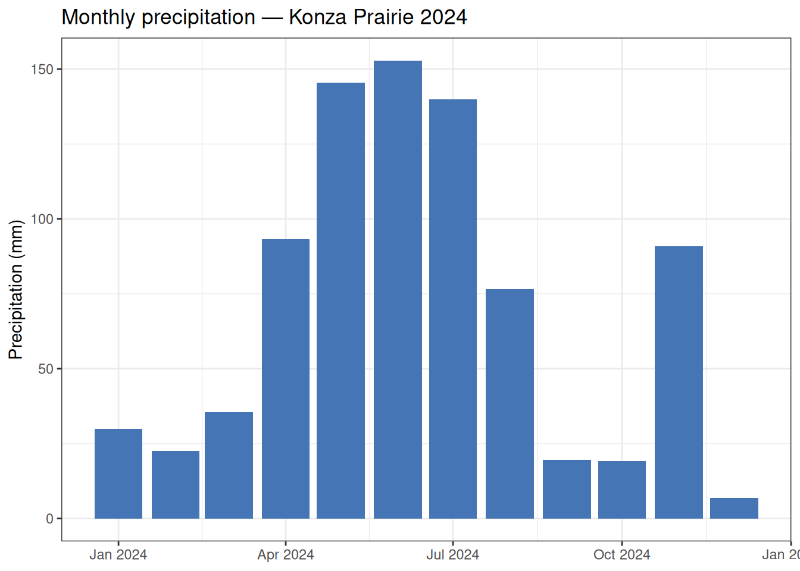

Introduction
The Kansas Mesonet is a statewide network of automated weather stations operated by Kansas State University. It provides sub-hourly meteorological data — including air temperature, relative humidity, precipitation, solar radiation, wind, and soil measurements — for more than 60 stations across Kansas.
This vignette walks through the workflow for discovering stations, browsing the variable catalog, downloading data, and reading cached files using the preMetabolizer Mesonet functions. We use Konza Prairie, a long-term ecological research (LTER) site in northeastern Kansas, as our example station.
Note: Functions that contact the Mesonet API require an internet connection. Code chunks marked with
#| eval: falsewill not run during package installation. Run them interactively in your own session.
Explore the variable catalog
ks_meso_vars() retrieves and parses the current Kansas Mesonet variable metadata, including CSV headings, variable names, units, and descriptions.
mesonet_vars <- ks_meso_vars()Search the catalog to find variables of interest:
mesonet_vars |>
filter(grepl("temp|precip|solar|humidity", desc, ignore.case = TRUE)) |>
select(var, tidy_name, units, desc)
#> # A tibble: 44 × 4
#> var tidy_name units desc
#> <chr> <chr> <chr> <chr>
#> 1 AirTemperature.avg air_temperature_avg °C Average air temperature…
#> 2 AirTemperature.min air_temperature_min °C Min air temperature at …
#> 3 AirTemperature.max air_temperature_max °C Max air temperature at …
#> 4 AirTemperature.smp air_temperature_smp °C Most recent 5 second sa…
#> 5 AirTemperature.10m.avg air_temperature_10m_avg °C Average air temperature…
#> 6 AirTemperature.10m.min air_temperature_10m_min °C Min air temperature at …
#> 7 AirTemperature.10m.max air_temperature_10m_max °C Max air temperature at …
#> 8 RelativeHumidity.avg relative_humidity_avg % Average relative humidi…
#> 9 RelativeHumidity.max relative_humidity_max % Max relative humidity a…
#> 10 RelativeHumidity.min relative_humidity_min % Min relative humidity a…
#> # ℹ 34 more rowsDiscover stations
ks_meso_stations() retrieves metadata for all Mesonet stations, including location, network affiliation, and whether the station supports FW13 fire weather reports.
stations <- ks_meso_stations()
glimpse(stations)
#> Rows: 129
#> Columns: 9
#> $ StationName <chr> "Alma 5SE", "Ashland 8S", "Ashland Bottoms", "Belleville …
#> $ County <chr> "Waubansee", "Clark", "Riley", "Republic", "Ottawa", "Sed…
#> $ Latitude <dbl> 38.96615, 37.06476, 39.12577, 39.81409, 39.07380, 37.8538…
#> $ Longitude <dbl> -96.20630, -99.75109, -96.63653, -97.67509, -97.58620, -9…
#> $ Elevation_m <dbl> 428.0000, 562.0000, 324.6120, 471.0000, 392.0000, 422.000…
#> $ Network <chr> "KSRE", "KSRE", "KSRE", "KSRE", "KSRE", "KSRE", "KSRE", "…
#> $ Abbreviation <chr> "Alma 5SE", "ASUK1", "ASBK1", "BVMK1", NA, NA, NA, "EDCK1…
#> $ OperatorName <chr> "Alma 5SE", "Ashland 8S", "Ashland Bottoms", "Belleville …
#> $ FW13 <chr> "000000", "140201", "142201", "140301", "000000", "000000…Filter to find Konza Prairie and confirm the exact station name used by the API:
konza <- stations |>
filter(grepl("Konza", StationName, ignore.case = TRUE))
konza
#> # A tibble: 1 × 9
#> StationName County Latitude Longitude Elevation_m Network Abbreviation
#> <chr> <chr> <dbl> <dbl> <dbl> <chr> <chr>
#> 1 Konza Prairie Riley 39.1 -96.5 436. KSRE <NA>
#> # ℹ 2 more variables: OperatorName <chr>, FW13 <chr>The station name recognized by the API is "Konza Prairie".
Check station activity
ks_meso_station_activity() shows the observation intervals available at each station and the date range of archived data. This is useful for verifying that a station has data for your study period and identifying the finest available temporal resolution.
activity <- ks_meso_station_activity()
activity |>
filter(station == "Konza Prairie")
#> station interval interval_seconds first_observation
#> 1 Konza Prairie 5min 300 2023-10-06 05:25:00
#> 2 Konza Prairie hour 3600 2023-10-06 07:00:00
#> 3 Konza Prairie day 86400 2023-10-08 00:00:00
#> last_observation data_span_days is_current
#> 1 2026-05-09 11:45:00 946.2639 TRUE
#> 2 2026-05-09 11:00:00 946.1667 TRUE
#> 3 2026-05-09 00:00:00 944.0000 TRUECheck the most recent observation
ks_meso_most_recent() returns the timestamp of the latest ingested observation for every station at a given interval, which is helpful for monitoring live data pipelines.
recent <- ks_meso_most_recent(interval = "hour")
recent |>
filter(station == "Konza Prairie")
#> # A tibble: 1 × 2
#> station timestamp
#> <chr> <dttm>
#> 1 Konza Prairie 2026-05-09 17:00:00Download data
get_ks_meso() downloads Mesonet data for one or more stations and saves the result to a local cache directory. Large date ranges are split into chunks automatically to stay within the API record limit.
Here we download hourly data for Konza Prairie for the 2024 calendar year, requesting air temperature, relative humidity, precipitation, and surface pressure.
download_result <- get_ks_meso(
stations = "Konza Prairie",
start_date = "2024-01-01",
end_date = "2024-12-31",
interval = "hour",
vars = c("TEMP2MAVG", "RELHUM2MAVG", "PRECIP", "PRESSUREAVG")
)
#> Using cache directory: /home/runner/.cache/R/preMetabolizer/mesonet_cache
#> Processing station: Konza Prairie
#> Downloading Konza Prairie: 20240101000000 to 20240421235959
#> Downloading Konza Prairie: 20240422000000 to 20240811235959
#> Downloading Konza Prairie: 20240812000000 to 20241201235959
#> Downloading Konza Prairie: 20241202000000 to 20241231235959
#> Data saved to: /home/runner/.cache/R/preMetabolizer/mesonet_cache/Mesonet_Konza Prairie_hour_2024-01-01_to_2024-12-31.csv
str(download_result)
#> List of 6
#> $ output_directory : chr "/home/runner/.cache/R/preMetabolizer/mesonet_cache"
#> $ successful_downloads: chr "Konza Prairie"
#> $ failed_downloads : chr(0)
#> $ total_attempted : int 1
#> $ total_successful : int 1
#> $ chunks :List of 4
#> ..$ :List of 5
#> .. ..$ station : chr "Konza Prairie"
#> .. ..$ start_time: chr "20240101000000"
#> .. ..$ end_time : chr "20240421235959"
#> .. ..$ url : chr "http://mesonet.k-state.edu/rest/stationdata/?int=hour&t_start=20240101000000&t_end=20240421235959&vars=TEMP2MAV"| __truncated__
#> .. ..$ records : int 2688
#> ..$ :List of 5
#> .. ..$ station : chr "Konza Prairie"
#> .. ..$ start_time: chr "20240422000000"
#> .. ..$ end_time : chr "20240811235959"
#> .. ..$ url : chr "http://mesonet.k-state.edu/rest/stationdata/?int=hour&t_start=20240422000000&t_end=20240811235959&vars=TEMP2MAV"| __truncated__
#> .. ..$ records : int 2688
#> ..$ :List of 5
#> .. ..$ station : chr "Konza Prairie"
#> .. ..$ start_time: chr "20240812000000"
#> .. ..$ end_time : chr "20241201235959"
#> .. ..$ url : chr "http://mesonet.k-state.edu/rest/stationdata/?int=hour&t_start=20240812000000&t_end=20241201235959&vars=TEMP2MAV"| __truncated__
#> .. ..$ records : int 2688
#> ..$ :List of 5
#> .. ..$ station : chr "Konza Prairie"
#> .. ..$ start_time: chr "20241202000000"
#> .. ..$ end_time : chr "20241231235959"
#> .. ..$ url : chr "http://mesonet.k-state.edu/rest/stationdata/?int=hour&t_start=20241202000000&t_end=20241231235959&vars=TEMP2MAV"| __truncated__
#> .. ..$ records : int 720Read cached data
Once downloaded, read_ks_meso() reads the cached file back into R. The TIMESTAMP column is automatically parsed as a POSIXct in the Mesonet timezone (Etc/GMT+6, i.e., CST without daylight saving).
konza_hourly <- read_ks_meso(
station = "Konza Prairie",
start_date = "2024-01-01",
end_date = "2024-12-31",
interval = "hour"
)
glimpse(konza_hourly)
#> Rows: 8,784
#> Columns: 6
#> $ TIMESTAMP <dttm> 2024-01-01 00:00:00, 2024-01-01 01:00:00, 2024-01-01 02:0…
#> $ STATION <chr> "Konza Prairie", "Konza Prairie", "Konza Prairie", "Konza …
#> $ PRESSUREAVG <dbl> 97.52, 97.51, 97.51, 97.55, 97.57, 97.55, 97.54, 97.57, 97…
#> $ TEMP2MAVG <dbl> -3.67, -3.84, -3.92, -4.12, -3.97, -3.93, -4.17, -4.41, -4…
#> $ RELHUM2MAVG <dbl> 87.35, 88.25, 88.72, 84.79, 81.95, 81.69, 81.83, 83.27, 84…
#> $ PRECIP <dbl> 0, 0, 0, 0, 0, 0, 0, 0, 0, NA, 0, 0, 0, 0, 0, 0, 0, 0, 0, …Example workflow: monthly precipitation
With the data in hand, standard dplyr and ggplot2 workflows apply. The example below summarizes monthly precipitation totals and daily temperature ranges.
monthly_precip <- konza_hourly |>
mutate(month = lubridate::floor_date(TIMESTAMP, "month")) |>
group_by(month) |>
summarise(
precip_mm = sum(PRECIP, na.rm = TRUE),
temp_mean_C = mean(TEMP2MAVG, na.rm = TRUE),
.groups = "drop"
)
ggplot(monthly_precip, aes(month, precip_mm)) +
geom_col(fill = "#4575b4") +
labs(
x = NULL,
y = "Precipitation (mm)",
title = "Monthly precipitation — Konza Prairie 2024"
) +
theme_bw()
FW13 fire weather data
ks_meso_fw13() retrieves fire weather records in the standard FW13 format used by USDA Forest Service fire behavior modeling tools.
fw13_records <- ks_meso_fw13(
station = "Konza Prairie",
start_date = "2024-04-01",
end_date = "2024-04-30"
)
# Each element is one fixed-width FW13 record
head(fw13_records, 3)